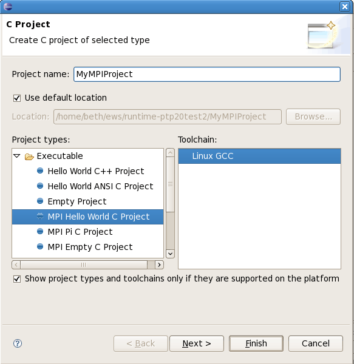
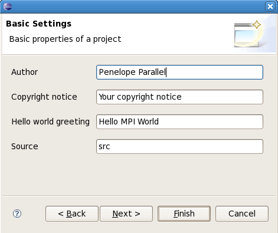
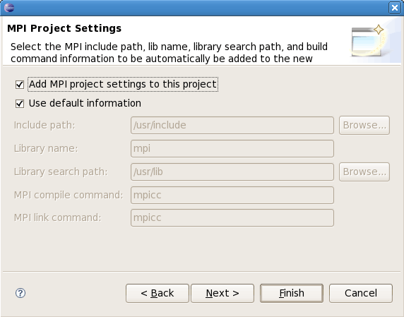
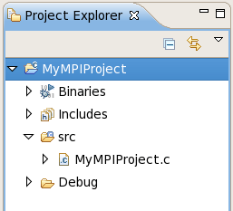
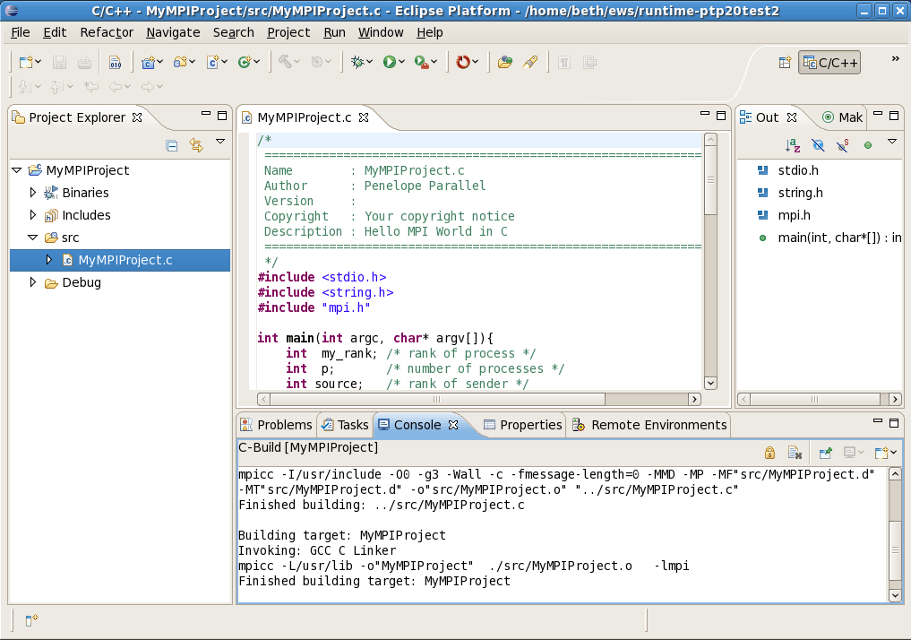

Topics include:
Note: this tutorial assumes you have the PLDT installed, to use the wizards for creating MPI projects.
First, be sure you are in the C/C++ Perspective (Window -> Open Perspective -> Other... and find C/C++)
To create a new MPI project in C using the managed build facility,
Select File -> New -> C Project ... The New Project dialog opens.
Fill in the project name, e.g. MyMPIProject.
Expand "Executable" and select "MPI Hello World C Project"

Click Next.
In the Basic Settings dialog, fill in the author name and change any other values you like.
Click Next.

In the MPI Project Settings dialog, make sure "Add MPI Project settings to this project" is checked.
You can uncheck "Use default information" if you need to change any values for include path, lib name or search path,
or MPI build commands.

Click Finish.
The new project is created, and appears in the C/C++ Projects view. Expand the 'src' folder to see the new source file.

Double-click on the source file name to open the C/C++ editor.

If you open the Console view (click on the "Console" tab near the bottom) you should see the result of the build.
Next create and start a Resource Manager and then you will be ready to launch the parallel program.